- composicion natural
- 100% de garantía de resultado
Gel FLEXOSAMINA
AVANCE EN LA MEDICINA MODERNA
Descuento del -50%
- Repara las articulaciones dañadas
- Alivia completamente los síndromes de dolor
- Elimina todo tipo de inflamaciones
A QUÉ LLEVA TRATAMIENTO EXTRAORDINARIO DE LAS ARTICULACIONES?
-
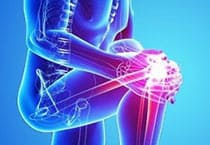
Dolor insoportable y deformidad articular
-
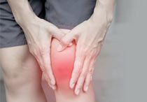
Artritis avanzada y la artritis conduce a la discapacidadи
-
Pérdida total de capacidad y vida sin esperanza para el futuro
- 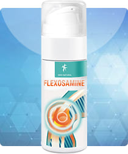
SOLUCIÓN TODO EN UNO TODOS LOS PROBLEMAS ARTICULARES
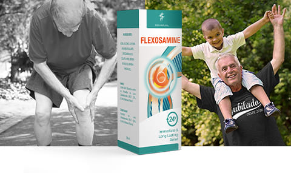Flexosamine contiene los compuestos mas beneficiosos para las articulaciones, que se encuentran en la naturaleza: extracto de semilla de enebro y extracto de corteza de pino. Se procesan mediante un método patentado llamado "hidrólisis enzimática". ¡Solo te permite guardar todos los componentes únicos!
¡EFICACIA PROBADA!
Realizamos un estudio clínico en el que participaron 2.000 voluntarios con enfermedades articulares de diversa gravedad.
Los resultados del estudio se convirtieron en un verdadero acontecimiento en el mundo de la medicina:
6 RAZONES PEDIR FLEXOSAMINA
-
Desarrollo innovador
En ensayos clínicos, se observó un efecto positivo del uso de Flexosamine en el 92% de los pacientes.
-
Restaurar la movilidad a las articulaciones
Ya no necesita tiempo para dispersarse". Te mantendrás al día fácilmente con tus nietos y dominarás fácilmente cualquier tarea".
-
Comodidad y descanso perfecto
La rigidez matutina y el dolor doloroso desaparecerán. Ya no tendrás que despertarte por la noche debido a molestias en las articulaciones.
-
Resultado instantáneo
Ahórrate la espera. Inmediatamente después de la aplicacion, el dolor disminuirá significativamente y en solo 5 minutos desaparecerá por completo.
-
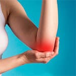
Elimina la causa del dolor
Regenera los tejidos blandos y restaura completamente el tejido cartilaginoso destruido. ¡Ayuda a construir su propia inmunidad!
-
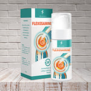
Un remedio para cada día
Restaura la elasticidad de los discos intervertebrales. ¡Mantendrás una columna sana durante muchos años y disfrutarás de la vida!
OPINIÓN EXPERTA
Jose Aguilar
Traumatólogo, Cirujano del Departamento de Cirugía Articular y Artroscopia
Gel Flexosamine se ha convertido en un verdadero avance en el campo de la medicina y se ha ganado rápidamente la confianza tanto de médicos como de pacientes. Este es un producto absolutamente único con una composición 100% natural de acción local. No solo alivia instantáneamente el dolor, sino que también elimina la causa raíz del dolor. La flexosamina restaura los tejidos dañados y devuelve las articulaciones a su plena salud y funcionalidad. Además, es un excelente estimulante de la inmunidad a las manifestaciones infecciosas de las enfermedades articulares. Para el tratamiento de enfermedades como artritis, artrosis, bursitis, sinusitis y osteocondrosis, Flexosamine gel es el mejor remedio entre los que existen actualmente en el mercado mundial.
COMPOSICIÓN INNOVADORA ¡DE COMPONENTES NATURALES!
-
EXTRACTO DE SEMILLA DE ENEBRO
Reduce la inflamación, la hinchazón y el dolor, nutre el tejido conectivo
-
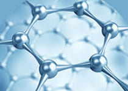
COLÁGENO NATURAL
Fortalece cartílagos, tendones, ligamentos, promueve la regeneración activa del cartílago
-
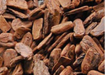
EXTRACTO DE CORTEZA DE PINO
Regula la consistencia del líquido sinovial, mejora la movilidad articular
-
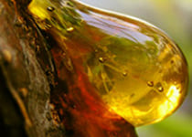
RESINA DE MADERA DE LA INDIA
Elimina las sales del tejido conjuntivo y evita que se vuelvan a depositar
AMBULANCIA ¡PARA EL DOLOR EN LAS ARTICULACIONES! ¿CÓMO UTILIZAR?
-
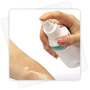
Paso 1: Aplicar el gel sobre la articulación afectada. Tras el primer contacto con la piel, notará una disminución del dolor
-
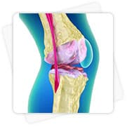
Paso 2: Espere 5 minutos para que Flexosamine penetre completamente en la articulación afectada
-
Paso 3: Después de 5 minutos, el dolor desaparecerá y podrá volver a sus actividades diarias
REVISIONES NUESTROS
COMPRADORES
Maria Salas 52 años
«Sufría de dolor en la articulación del hombro»Practicaba deportes profesionales (voleibol) durante 10 años. Dio la casualidad de que terminé en el hospital con condrosis y dolor en la articulación del hombro. El hombro estaba muy hinchado. Me enviaron al hospital. Después de que me dieron de alta, la mano aún no se había ido por completo. Decidí recurrir a una clínica paga. En la cita, el neuropatólogo me recetó gel de flexosamina. Ordené a través de este sitio. El gel llegó rápido. ¡Cuál fue mi admiración por la medicina moderna cuando la probé! Lo puse en mi hombro una vez y después de unos minutos no sentí ningún dolor en absoluto. Definitivamente recomiendo esta herramienta, ¡es un milagro!
Rosa Sotelo 68 años
«Perdí la movilidad, me dolían las articulaciones»¡Hola! Tengo 68 años y entiendo perfectamente que nadie sueñe con una vida sin dolor en las articulaciones a esa edad. Ya he probado todo lo posible. Después de todo, desea mantenerse al día con sus nietos. Cada vez es menos probable que mi hija me deje cuidarla, porque ve lo difícil que es para mí. Decidí buscar una solución a mi problema en Internet. Encontré un foro médico donde había un artículo sobre flexosamina y un enlace a su sitio. Decidió ordenar. Resultó estar realmente funcionando. Ahora, si me duele alguna articulación, simplemente saco Flexosamine de mi bolso y en una sola aplicación el dolor desaparece. Ahora es mi salvavidas. ¡Yo recomiendo!
Mario Gonzales 49 años
«Había un dolor intenso en la articulación de la rodilla»Trabajo como entrenador en el equipo de fútbol infantil. A menudo les muestro a mis muchachos cómo trabajar con la pelota. Así que el mes pasado me dolía mucho la rodilla. Primero me tomaron una radiografía y dijeron que tenía artritis. Apenas caminó. Como una persona discapacitada. Los médicos sugirieron operarme la rodilla, pero no quería pasar por el quirófano. Empecé a estudiar este problema por mi cuenta. Gracias a Dios no los escuché. Vi un anuncio de flexosamina en la televisión y supe que era lo que necesitaba. Lo tomé de este sitio, el oficial es el mismo. El gel llegó bastante rápido. Lo puse en mi rodilla. Tan pronto como comencé a aplicar, inmediatamente sentí un cambio para mejor. No es un remedio, sino un milagro. ¡Muchos gracias!
COMO ORDENAR ENVÍO Y PAGO
-
Entrega por correo dentro de 1 - 2 días hábiles.
-
¡Sin prepagos! El pago se realiza al recibir la mercancía.
-
Garantizamos la total seguridad de la mercancía durante la entrega.
FLEXOSAMINE
PARA TRATAMIENTO DE ARTICULACIONES
Descuento del -50%